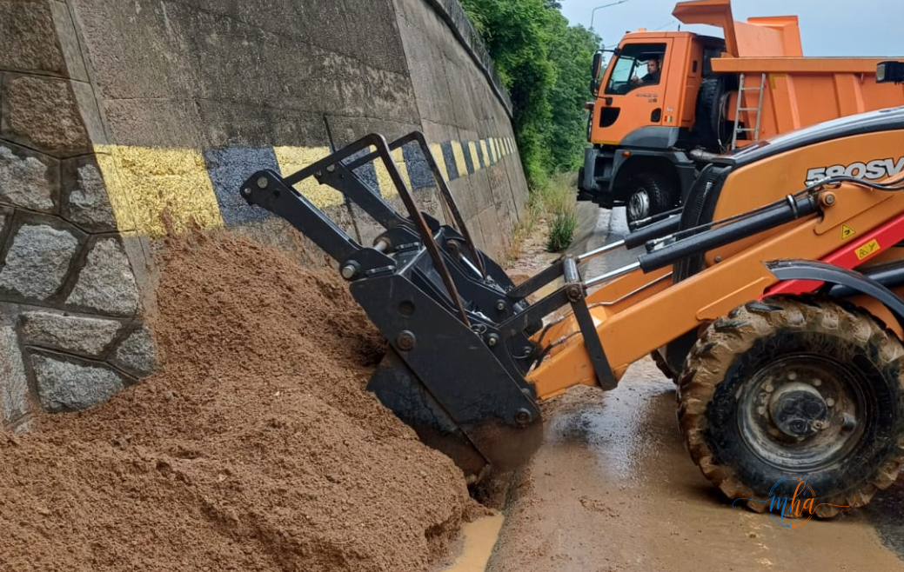

Traficul pe Drumul Național 6, în zona tunelului Bahna din județul Mehedinți, a fost complet blocat în cursul zilei de astăzi din cauza unor lucrări de întreținere programate. Intervenția echipelor din teren a generat blocaje semnificative, cu coloane lungi de autovehicule formate rapid pe ambele sensuri.
Zona tunelului Bahna și a viaductelor din împrejurimi reprezintă un punct important de tranzit pe DN6, drum ce face legătura între Drobeta-Turnu Severin și restul țării. Orice intervenție în această zonă afectează direct fluxul de trafic regional.
Intervenție cu buldozer și autobasculantă pe viaducte
Lucrările în curs vizează curățarea rigoalelor de pe viaductele din zona tunelului Bahna — operațiune esențială pentru buna scurgere a apelor pluviale și pentru prevenirea degradării structurii rutiere. Intervenția este realizată cu buldozer și autobasculantă, utilaje de mari dimensiuni care necesită ocuparea integrală a carosabilului.
Tocmai din această cauză, circulația a fost complet blocată timp de aproximativ 30 de minute în zona lucrărilor, echipele din teren gestionând alternativ accesul autovehiculelor pe sectorul afectat.

Buldozerul încarcă nămolul din rigolă în autobasculantă, pe viaductul de la Bahna. Foto: MehedintiAzi.ro
📌 Situația traficului — DN6 Tunel Bahna
- Locație: DN6, zona tunelului Bahna, județul Mehedinți
- Tip lucrare: Curățare rigole pe viaductele din zonă
- Utilaje folosite: Buldozer + autobasculantă
- Durata blocării: Aproximativ 30 de minute
- Impact: Coloane de autovehicule pe ambele sensuri
- Recomandare: Răbdare și respectarea indicațiilor echipelor din teren
Coloane de mașini — nervii șoferilor, puși la grea încercare
Coloanele de autovehicule s-au format rapid pe sectorul afectat, iar nervii șoferilor au fost puși la grea încercare pe viaductele din zonă. Mulți conducători auto nu au fost informați în prealabil despre lucrări și s-au trezit blocați în trafic fără posibilitate de deviere imediată.
Autoritățile și echipele din teren au sfătuit participanții la trafic să manifeste răbdare și să respecte indicațiile personalului aflat la fața locului. Intervenția, deși inconfortabilă pentru șoferi, este necesară pentru menținerea în stare bună a infrastructurii rutiere din această zonă sensibilă.
Participanții la trafic sunt sfătuiți să manifeste răbdare și să respecte indicațiile echipelor din teren.
De ce sunt importante lucrările la rigole pe viaducte?
Rigoalele sunt canalele de scurgere a apei de pe carosabil și de pe structurile de tip viaduct. Dacă acestea sunt înfundate cu noroi, frunze sau alte depuneri, apa se acumulează pe drumul public, ceea ce poate duce la hidroplanare, deteriorarea asfaltului și chiar afectarea structurii viaductului pe termen lung.
Lucrările de curățare periodică reprezintă o intervenție de întreținere preventivă, mult mai puțin costisitoare decât reparațiile majore necesare în cazul în care aceste probleme sunt ignorate. Zona tunelului Bahna, prin configurația sa geografică specifică, este una dintre zonele cu risc crescut de acumulare a apei și a sedimentelor.
Dacă nu este urgentă deplasarea, evitați zona tunelului Bahna pe DN6 până la finalizarea lucrărilor. Verificați informațiile de trafic în timp real înainte de a pleca la drum pe acest traseu.
DN6 — drum cu trafic intens în Mehedinți
Drumul Național 6 este una dintre arterele principale din județul Mehedinți, utilizat zilnic de mii de autovehicule — atât persoane fizice, cât și transportatori de marfă. Orice blocare pe acest traseu are un efect în cascadă asupra tuturor localităților traversate.
Autoritățile rutiere din județ au intensificat în ultimii ani lucrările de întreținere pe DN6, inclusiv pe segmentele cu structuri mai complexe, precum viaductele și tunelul din zona Bahna. Scopul declarat este menținerea în siguranță a infrastructurii și reducerea riscurilor pentru participanții la trafic.
- Drum afectat: DN6 — zona tunel Bahna, județul Mehedinți
- Cauza blocajului: Lucrări de curățare rigole pe viaducte
- Utilaje: Buldozer și autobasculantă
- Blocare totală: ~30 de minute
- Coloane formate: Da, pe ambele sensuri
- Recomandare: Răbdare, respectați indicațiile echipelor din teren